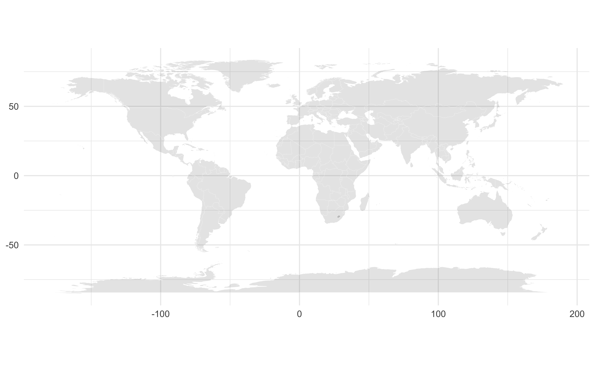
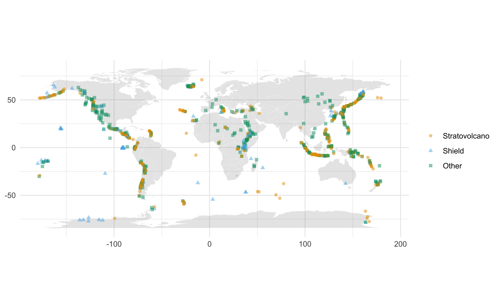
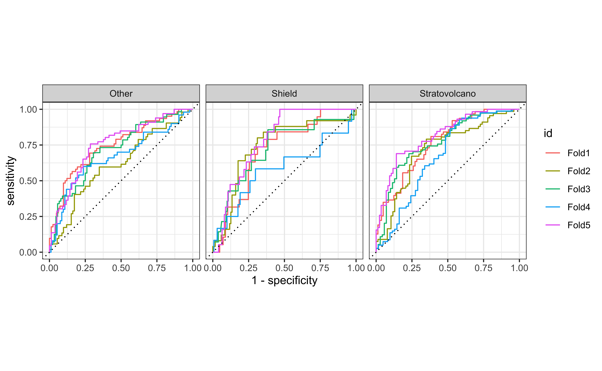

# load packages
library(tidyverse)
library(tidymodels)
library(knitr)
library(colorblindr)
library(themis)
# set default theme and larger font size for ggplot2
ggplot2::theme_set(ggplot2::theme_minimal(base_size = 16))MultiLR: Predictive models
STA 210 - Spring 2022
Welcome
Topics
- Building predictive multinomial logistic regression models
- Comparing models
Computational setup
Terminology
What’s the difference between regression and classification?
- Logistic regression / binary classification
- Multinomial logistic regression / multinomial classification
Data
Volcanoes
The data come from The Smithsonian Institution, via TidyTuesday.
volcano <- read_csv(here::here("slides", "data/volcano.csv"))
names(volcano) [1] "volcano_number" "volcano_name"
[3] "primary_volcano_type" "last_eruption_year"
[5] "country" "region"
[7] "subregion" "latitude"
[9] "longitude" "elevation"
[11] "tectonic_settings" "evidence_category"
[13] "major_rock_1" "major_rock_2"
[15] "major_rock_3" "major_rock_4"
[17] "major_rock_5" "minor_rock_1"
[19] "minor_rock_2" "minor_rock_3"
[21] "minor_rock_4" "minor_rock_5"
[23] "population_within_5_km" "population_within_10_km"
[25] "population_within_30_km" "population_within_100_km"Volcanoes
glimpse(volcano)Rows: 958
Columns: 26
$ volcano_number <dbl> 283001, 355096, 342080, 213004, 321040, 28317…
$ volcano_name <chr> "Abu", "Acamarachi", "Acatenango", "Acigol-Ne…
$ primary_volcano_type <chr> "Shield(s)", "Stratovolcano", "Stratovolcano(…
$ last_eruption_year <chr> "-6850", "Unknown", "1972", "-2080", "950", "…
$ country <chr> "Japan", "Chile", "Guatemala", "Turkey", "Uni…
$ region <chr> "Japan, Taiwan, Marianas", "South America", "…
$ subregion <chr> "Honshu", "Northern Chile, Bolivia and Argent…
$ latitude <dbl> 34.500, -23.292, 14.501, 38.537, 46.206, 37.6…
$ longitude <dbl> 131.600, -67.618, -90.876, 34.621, -121.490, …
$ elevation <dbl> 641, 6023, 3976, 1683, 3742, 1728, 1733, 1250…
$ tectonic_settings <chr> "Subduction zone / Continental crust (>25 km)…
$ evidence_category <chr> "Eruption Dated", "Evidence Credible", "Erupt…
$ major_rock_1 <chr> "Andesite / Basaltic Andesite", "Dacite", "An…
$ major_rock_2 <chr> "Basalt / Picro-Basalt", "Andesite / Basaltic…
$ major_rock_3 <chr> "Dacite", " ", " ", "Basalt / Picro-Basalt", …
$ major_rock_4 <chr> " ", " ", " ", "Andesite / Basaltic Andesite"…
$ major_rock_5 <chr> " ", " ", " ", " ", " ", " ", " ", " ", " ", …
$ minor_rock_1 <chr> " ", " ", "Basalt / Picro-Basalt", " ", "Daci…
$ minor_rock_2 <chr> " ", " ", " ", " ", " ", "Basalt / Picro-Basa…
$ minor_rock_3 <chr> " ", " ", " ", " ", " ", " ", " ", "Andesite …
$ minor_rock_4 <chr> " ", " ", " ", " ", " ", " ", " ", " ", " ", …
$ minor_rock_5 <chr> " ", " ", " ", " ", " ", " ", " ", " ", " ", …
$ population_within_5_km <dbl> 3597, 0, 4329, 127863, 0, 428, 101, 51, 0, 98…
$ population_within_10_km <dbl> 9594, 7, 60730, 127863, 70, 3936, 485, 6042, …
$ population_within_30_km <dbl> 117805, 294, 1042836, 218469, 4019, 717078, 1…
$ population_within_100_km <dbl> 4071152, 9092, 7634778, 2253483, 393303, 5024…Types of volcanoes
Probably too many types!
volcano %>%
count(primary_volcano_type, sort = TRUE) %>%
print(n = 26)# A tibble: 26 × 2
primary_volcano_type n
<chr> <int>
1 Stratovolcano 353
2 Stratovolcano(es) 107
3 Shield 85
4 Volcanic field 71
5 Pyroclastic cone(s) 70
6 Caldera 65
7 Complex 46
8 Shield(s) 33
9 Submarine 27
10 Lava dome(s) 26
11 Fissure vent(s) 12
12 Caldera(s) 9
13 Compound 9
14 Maar(s) 8
15 Pyroclastic shield 7
16 Tuff cone(s) 7
17 Crater rows 5
18 Subglacial 5
19 Pyroclastic cone 4
20 Lava dome 3
21 Complex(es) 1
22 Lava cone 1
23 Lava cone(es) 1
24 Lava cone(s) 1
25 Stratovolcano? 1
26 Tuff cone 1Relevel volcanoes
volcano <- volcano %>%
mutate(
volcano_type = case_when(
str_detect(primary_volcano_type, "Stratovolcano") ~ "Stratovolcano",
str_detect(primary_volcano_type, "Shield") ~ "Shield",
TRUE ~ "Other"
),
volcano_type = fct_relevel(volcano_type, "Stratovolcano", "Shield", "Other")
)
volcano %>%
count(volcano_type)# A tibble: 3 × 2
volcano_type n
<fct> <int>
1 Stratovolcano 461
2 Shield 118
3 Other 379Data prep
- Select a few variables as predictors for the model with
- Convert all character variables to factors
. . .
volcano <- volcano %>%
select(
volcano_type, latitude, longitude,
elevation, tectonic_settings, major_rock_1
) %>%
mutate(across(where(is.character), as_factor))Mapping the volcanoes

World map data
world <- map_data("world")
world %>% as_tibble()# A tibble: 99,338 × 6
long lat group order region subregion
<dbl> <dbl> <dbl> <int> <chr> <chr>
1 -69.9 12.5 1 1 Aruba <NA>
2 -69.9 12.4 1 2 Aruba <NA>
3 -69.9 12.4 1 3 Aruba <NA>
4 -70.0 12.5 1 4 Aruba <NA>
5 -70.1 12.5 1 5 Aruba <NA>
6 -70.1 12.6 1 6 Aruba <NA>
7 -70.0 12.6 1 7 Aruba <NA>
8 -70.0 12.6 1 8 Aruba <NA>
9 -69.9 12.5 1 9 Aruba <NA>
10 -69.9 12.5 1 10 Aruba <NA>
# … with 99,328 more rowsDraw world map
world_map <- ggplot() +
geom_polygon(
data = world,
aes(
x = long, y = lat, group = group),
color = "white", fill = "gray50",
size = 0.05, alpha = 0.2
) +
theme_minimal() +
coord_quickmap() +
labs(x = NULL, y = NULL)
world_map
Add volcanoes
world_map +
geom_point(
data = volcano,
aes(
x = longitude, y = latitude,
color = volcano_type,
shape = volcano_type),
alpha = 0.5
) +
scale_color_OkabeIto() +
labs(color = NULL, shape = NULL)
Your turn
📋 github.com/sta210-s22/ae-11-volcanoes - Exercise 1
Build a model
Split into testing/training
set.seed(1234)
volcano_split <- initial_split(volcano)
volcano_train <- training(volcano_split)
volcano_test <- testing(volcano_split)Create a recipe
Start with a model that doesn’t use geographic information:
Specify a model
volcano_spec <- multinom_reg() %>%
set_engine("nnet")
volcano_specMultinomial Regression Model Specification (classification)
Computational engine: nnet Create a workflow
volcano_wflow1 <- workflow() %>%
add_recipe(volcano_rec1) %>%
add_model(volcano_spec)
volcano_wflow1══ Workflow ════════════════════════════════════════════════════════════════════
Preprocessor: Recipe
Model: multinom_reg()
── Preprocessor ────────────────────────────────────────────────────────────────
6 Recipe Steps
• step_rm()
• step_other()
• step_other()
• step_dummy()
• step_zv()
• step_center()
── Model ───────────────────────────────────────────────────────────────────────
Multinomial Regression Model Specification (classification)
Computational engine: nnet Create cross validation folds
set.seed(9876)
volcano_folds <- vfold_cv(volcano_train, v = 5)
volcano_folds# 5-fold cross-validation
# A tibble: 5 × 2
splits id
<list> <chr>
1 <split [574/144]> Fold1
2 <split [574/144]> Fold2
3 <split [574/144]> Fold3
4 <split [575/143]> Fold4
5 <split [575/143]> Fold5Fit resamples
volcano_fit_rs1 <- volcano_wflow1 %>%
fit_resamples(
volcano_folds,
control = control_resamples(save_pred = TRUE)
)
volcano_fit_rs1# Resampling results
# 5-fold cross-validation
# A tibble: 5 × 5
splits id .metrics .notes .predictions
<list> <chr> <list> <list> <list>
1 <split [574/144]> Fold1 <tibble [2 × 4]> <tibble [0 × 1]> <tibble [144 × 7]>
2 <split [574/144]> Fold2 <tibble [2 × 4]> <tibble [0 × 1]> <tibble [144 × 7]>
3 <split [574/144]> Fold3 <tibble [2 × 4]> <tibble [0 × 1]> <tibble [144 × 7]>
4 <split [575/143]> Fold4 <tibble [2 × 4]> <tibble [0 × 1]> <tibble [143 × 7]>
5 <split [575/143]> Fold5 <tibble [2 × 4]> <tibble [0 × 1]> <tibble [143 × 7]>Collect metrics
collect_metrics(volcano_fit_rs1)# A tibble: 2 × 6
.metric .estimator mean n std_err .config
<chr> <chr> <dbl> <int> <dbl> <chr>
1 accuracy multiclass 0.596 5 0.0146 Preprocessor1_Model1
2 roc_auc hand_till 0.703 5 0.0244 Preprocessor1_Model1ROC curve
ROC curves for multiclass outcomes use a one-vs-all approach: calculate multiple curves, one per level vs. all other levels.
volcano_fit_rs1 %>%
collect_predictions() %>%
group_by(id) %>%
roc_curve(
truth = volcano_type,
.pred_Stratovolcano:.pred_Other
) %>%
autoplot()
ROC curve - under the hood
An additional column, .level, identifies the “one” column in the one-vs-all calculation:
volcano_fit_rs1 %>%
collect_predictions() %>%
group_by(id) %>%
roc_curve(
truth = volcano_type,
.pred_Stratovolcano:.pred_Other
)# A tibble: 2,175 × 5
# Groups: id [5]
id .level .threshold specificity sensitivity
<chr> <chr> <dbl> <dbl> <dbl>
1 Fold1 Stratovolcano -Inf 0 1
2 Fold1 Stratovolcano 0.0621 0 1
3 Fold1 Stratovolcano 0.0786 0.0123 1
4 Fold1 Stratovolcano 0.0869 0.0247 1
5 Fold1 Stratovolcano 0.0957 0.0370 1
6 Fold1 Stratovolcano 0.104 0.0494 1
7 Fold1 Stratovolcano 0.104 0.0617 1
8 Fold1 Stratovolcano 0.105 0.0741 1
9 Fold1 Stratovolcano 0.105 0.0864 1
10 Fold1 Stratovolcano 0.107 0.0988 1
# … with 2,165 more rowsBuild another model
Your turn
📋 github.com/sta210-s22/ae-11-volcanoes - Exercise 2
Acknowledgements
Inspired by
- https://juliasilge.com/blog/multinomial-volcano-eruptions/
- https://juliasilge.com/blog/nber-papers/